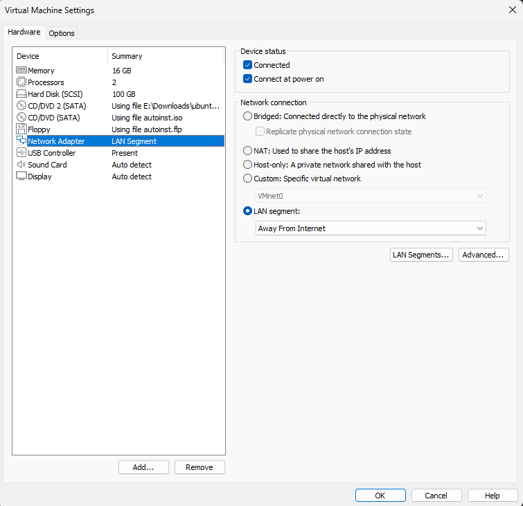
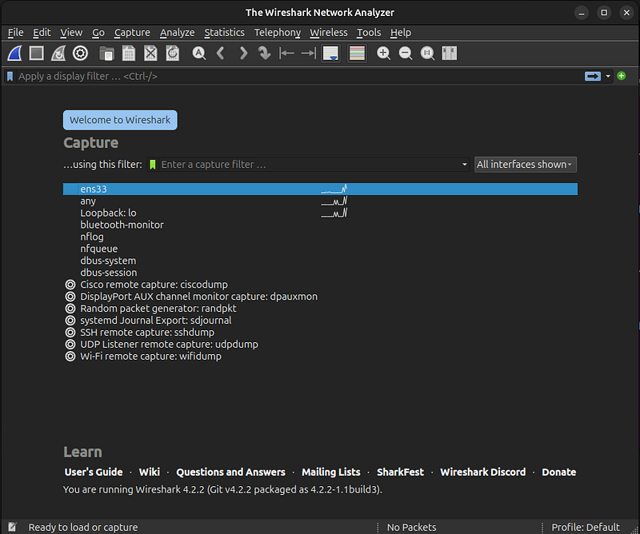
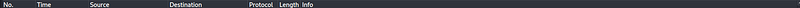
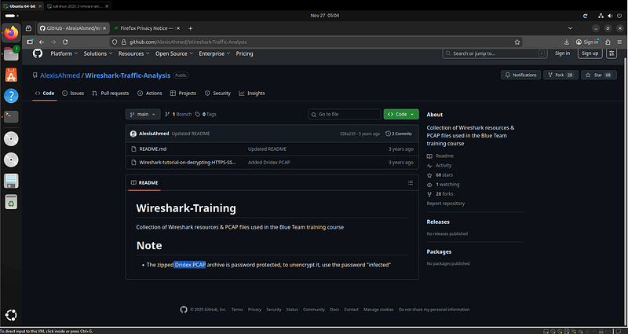
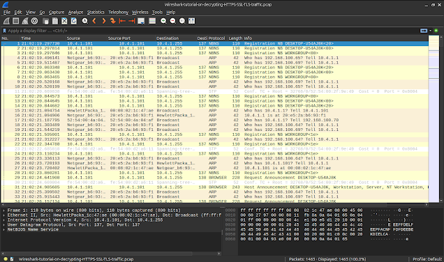
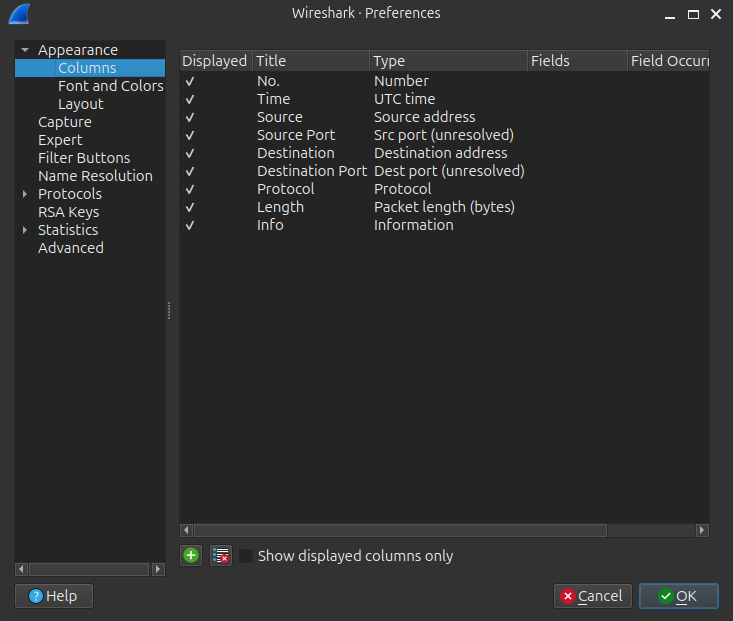
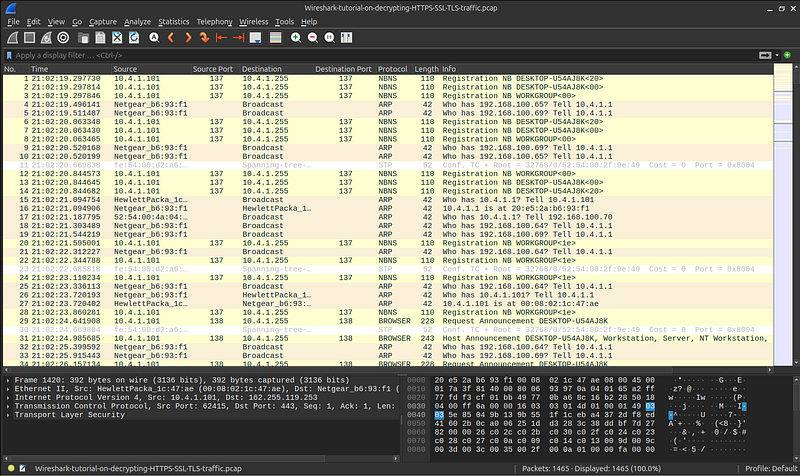
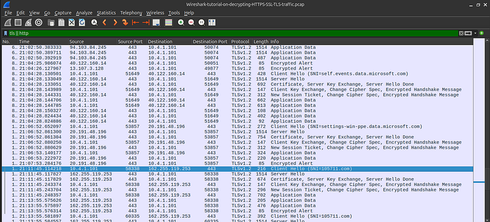
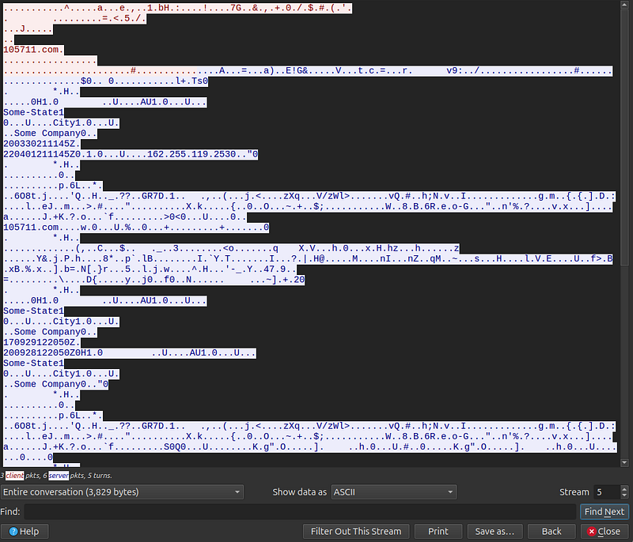

Malware Traffic Analysis with Wireshark - Detecting Dridex C2 Traffic
.png)
Introduction
In this project, I analysed a PCAP capture of a compromised Windows
machine to uncover signs of a Dridex banking Trojan infection. Using
Wireshark I identified encrypted TLS sessions, extracted suspicious
Server Name Indication (SNI) domains, followed malicious TCP
streams, and confirmed active C2 beaconing.
This post shows step-by-step how I discovered the infection along
with key Indicators of Compromise (IOCs) so you can replicate the
same process in your own malware traffic analysis lab.
Lab Topology & Overview
• Host OS for analysis: Ubuntu.
• Packet analysis tool: Wireshark
Enviromental Setup & Pcap download
Before opening the PCAP file, I ensured my virtual machine was
isolated from the Internet so that any embedded malware activity
could NOT communicate externally.
I changed my VMware network adapter to LAN Segment (Away From
Internet):

What this guarantees• No accidental malware execution
• No C2 communication leaving the VM
• Safe packet analysis environment
I installed Wireshark on Ubuntu and prepared my workspace. Here is Wireshark immediately after installation:


I downloaded the PCAP file from the AlexisAhmed GitHub repository:
Analysis Steps & Findings
After loading the PCAP into Wireshark, I began with a general look at the traffic:

To make analysis easier, I added Source Port and Destination Port as unresolved columns: • Source Port • Destination Port

Once the PCAP file was loaded into Wireshark, the first step was to filter the dataset to focus on TLS and HTTP traffic, as these protocols typically reveal suspicious outbound behaviour. After applying the filter, it became clear that one internal IP address 10.4.1.101 was responsible for repeatedly initiating encrypted TLS connections to multiple external servers. This repetition and consistency suggested automated activity rather than normal user-driven browsing, which immediately raised suspicion about the host being infected or compromised.
With the infected host identified, the next phase involved inspecting the TLS Client Hello packets. These packets often contain the Server Name Indication (SNI), which tells us exactly which domain the client is attempting to reach even when the rest of the traffic is encrypted. Most of the SNI values in this capture corresponded to legitimate Microsoft-related services such as Skype or telemetry domains. However, one domain stood out: i05l711.com. This domain is not associated with any known legitimate service and follows a naming pattern commonly used by malware families like Dridex, which often generate random-looking command-and-control (C2) domains. This discovery strongly indicated malicious outbound communication.To validate the suspicion further, I followed the TLS stream associated with the connection to i05l711.com. As expected, the content of the stream was fully encrypted, which is typical for modern malware that communicates over HTTPS. However, even without decrypting the traffic, several characteristics confirmed malicious behaviour. The encrypted data appeared in repetitive intervals, mimicking the structure and timing of botnet beaconing essentially periodic check-ins to a remote command server. Additionally, embedded within the binary data were identifiable strings resembling machine profiling information such as city names, company placeholders, and timestamp like SomeState1, SomeCity1, SomeCompany0, 2003030211145Z, 220401211145Z. These fields are consistent with how Dridex bots register themselves with their C2 infrastructure, further confirming that this was not normal encrypted traffic but active malware communication.

Full Indicator of Compromise (IOC list)
Malicious Domain (SNI) — i05l711.com
Malicious IP Address (C2
Server) — 162.255.119.253
Infected Internal Host (Victim
Machine) — 10.4.1.101
Protocols and Ports Used — Protocol:
TLSv1.2, 443 (HTTPS)
Bot Metadata — SomeState1, SomeCity1,
SomeCompany0
C2 Timestamps — 2003030211145Z, 220401211145Z,
200928122056Z
Key Takeaways
1. I learned the importance of isolating my analysis environment to
safely handle potentially malicious PCAP files.
2. I discovered how
encrypted malware traffic can still be identified through metadata
such as SNI and TLS handshake details.
3. I improved my Wireshark
skills by using custom columns and filters to quickly detect
suspicious activity.
4. I understood how infected hosts communicate
with external C2 servers through repeated encrypted outbound
traffic.
5. I gained experience extracting and documenting IOCs,
strengthening my malware analysis and reporting abilities.